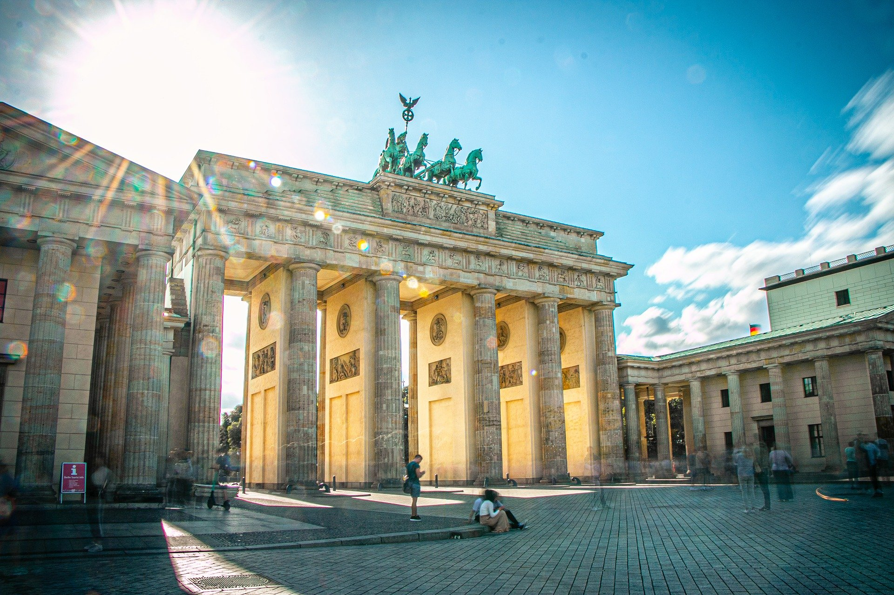
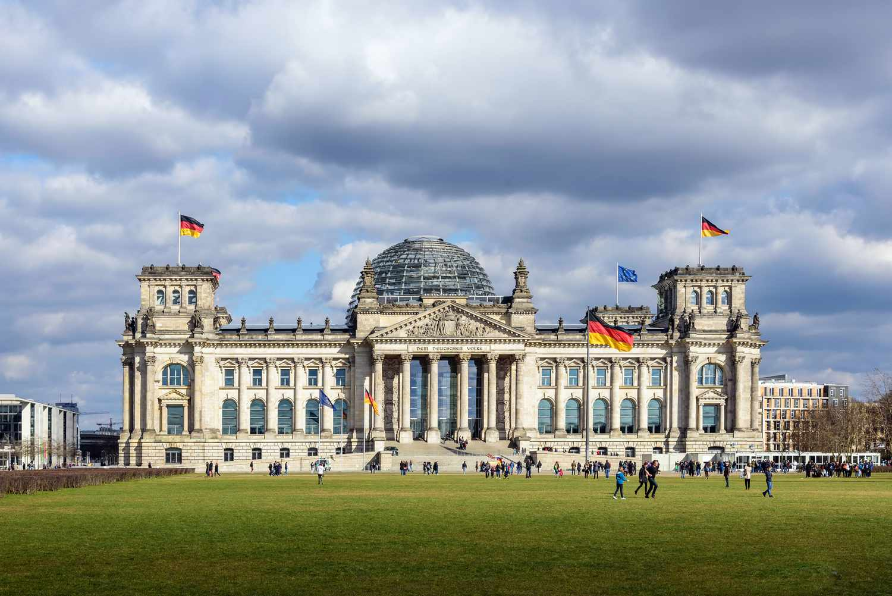
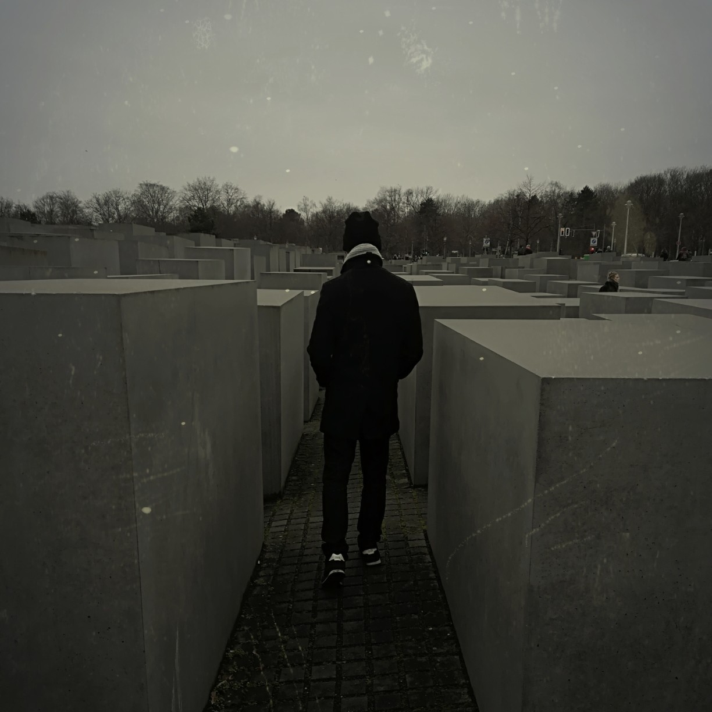
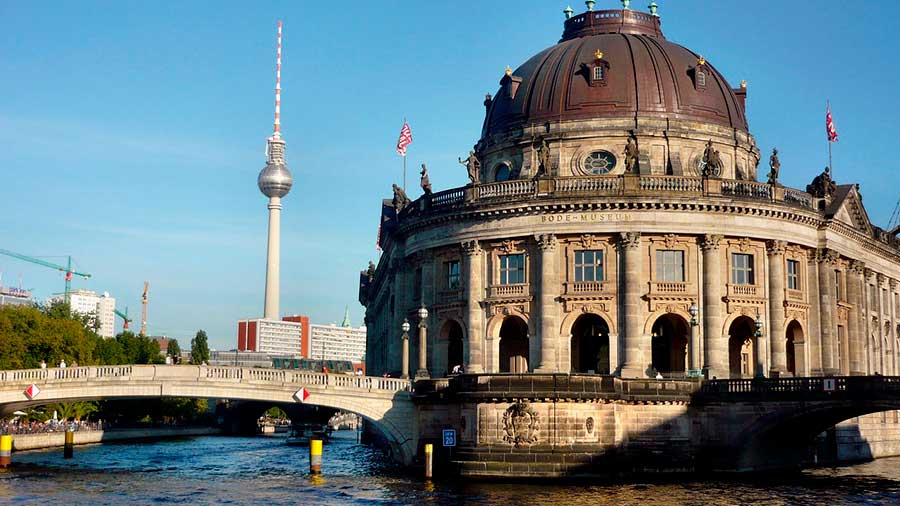
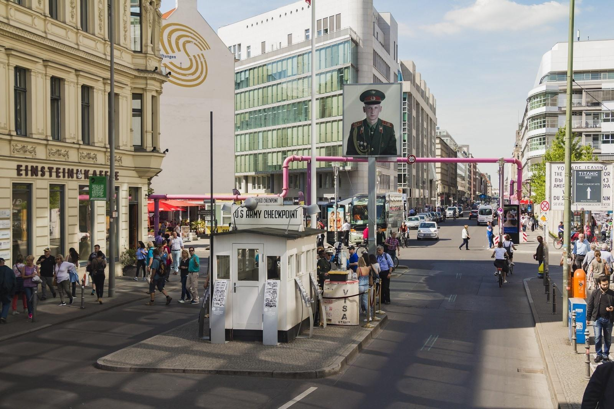
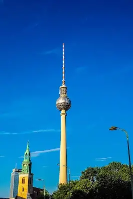
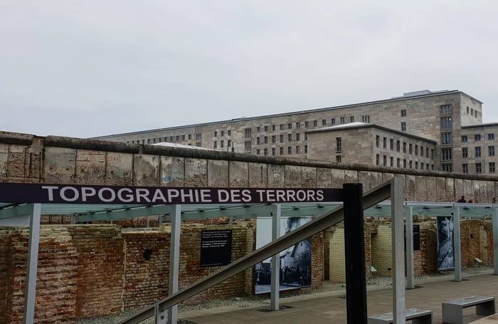
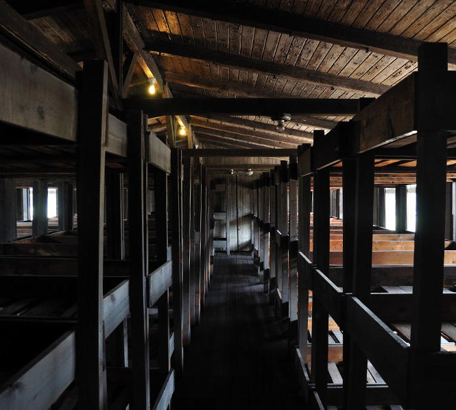
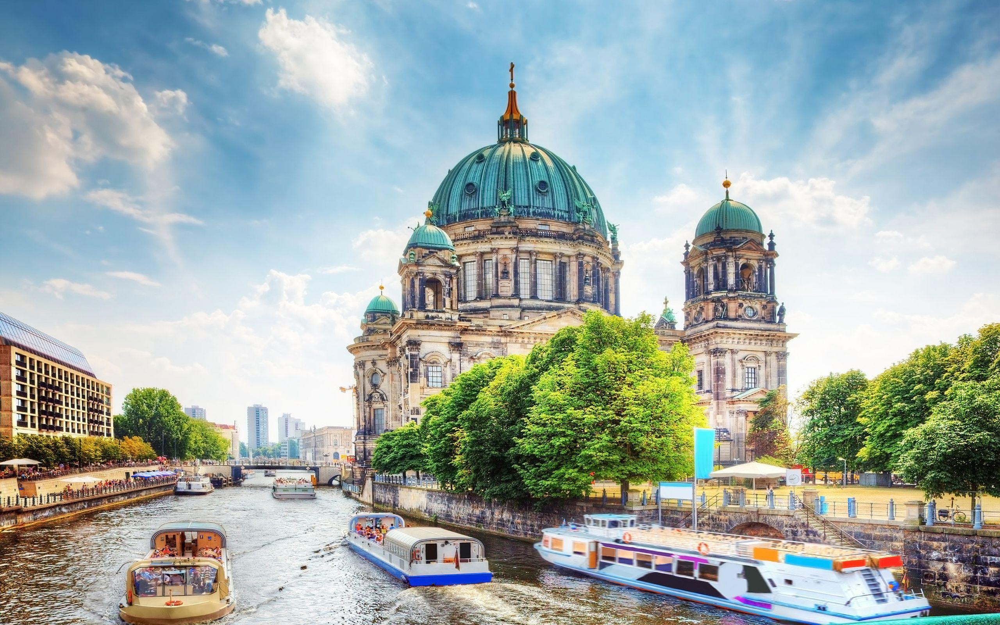

1. Introducción
Berlín es una ciudad vibrante y llena de historia, donde el pasado y el futuro se encuentran en cada esquina. Desde los restos del Muro de Berlín hasta la moderna arquitectura de Potsdamer Platz, la ciudad ofrece una mezcla única de cultura, arte y vida nocturna.
Berlín es la capital de Alemania y una de las ciudades más importantes de Europa. Fue testigo de algunos de los eventos más significativos del siglo XX, como la Segunda Guerra Mundial y la Guerra Fría. Hoy en día, es un centro cultural y artístico de primer nivel, con museos, galerías, teatros y una escena musical alternativa incomparable.
---3. 🏨 Dónde alojarse en Berlín
🏛️ Mitte ⭐⭐⭐⭐⭐
🎨 Kreuzberg ⭐⭐⭐⭐
🚉 Friedrichshain ⭐⭐⭐
🌳 Prenzlauer Berg ⭐⭐⭐⭐
🏛️ Charlottenburg ⭐⭐⭐⭐
🎨 Neukölln ⭐⭐⭐
Mi recomendación personal es alojarse en Mitte si es tu primera vez en Berlín y quieres estar cerca de los principales monumentos. Si buscas ambiente alternativo y vida nocturna, elige Kreuzberg o Friedrichshain. Para presupuestos ajustados, Neukölln es la mejor opción.
🚇 Metro en Berlín: La red de transporte es excelente. Las líneas más útiles para turistas son la U2 (conecta Mitte, Potsdamer Platz, Zoo), U5 (conecta Alexanderplatz, Puerta de Brandeburgo, Hauptbahnhof) y U6 (conecta Friedrichstrasse, Tempelhof).
🏠 Alternativas: Los apartamentos turísticos (Airbnb) son muy populares en Berlín, especialmente en Kreuzberg y Friedrichshain. Suelen ser más económicos que los hoteles y ofrecen más espacio.
🚫 Zonas a evitar: Evita alojarte cerca de la estación de Kottbusser Tor (Kreuzberg) por la noche (puede ser inseguro) y en barrios periféricos como Marzahn o Hellersdorf (alejados y sin interés turístico).
4. 📍 Qué ver en Berlín

1. 🏛️ Puerta de Brandeburgo
El símbolo más famoso de Berlín y de toda Alemania. Esta puerta neoclásica del siglo XVIII fue testigo de la división de la ciudad durante la Guerra Fría y se convirtió en el emblema de la reunificación alemana. Es el punto de partida perfecto para recorrer la ciudad.
La puerta está flanqueada por la emblemática cuadriga de bronce. Por la noche está iluminada y es impresionante. Desde aquí se puede caminar por la Pariser Platz y acceder al Reichstag o al Memorial del Holocausto.

2. 🏛️ Reichstag (Parlamento alemán)
El edificio del parlamento alemán, famoso por su espectacular cúpula de cristal diseñada por el arquitecto Norman Foster. Desde la cúpula se obtienen unas vistas panorámicas impresionantes de toda la ciudad.
La visita a la cúpula es gratuita, pero es imprescindible reservar con antelación (semanas antes). El edificio en sí también es una obra maestra de la arquitectura, combinando el estilo histórico con elementos modernos.

3. 🧱 Muro de Berlín (East Side Gallery)
El tramo más largo y mejor conservado del Muro de Berlín, convertido en una galería de arte al aire libre. Más de 100 pinturas de artistas de todo el mundo cubren 1,3 km del muro, convirtiéndolo en el monumento conmemorativo más grande del mundo.
La pintura más famosa es el "Fraternal Kiss" (el beso entre Honecker y Brézhnev). Es un lugar lleno de historia y arte, perfecto para entender la división de la ciudad.

4. 🪦 Memorial del Holocausto
Un impresionante campo de 2.711 estelas de hormigón de diferentes alturas, diseñado por Peter Eisenman. Es un homenaje a los judíos europeos asesinados durante el Holocausto. Caminar entre las estelas es una experiencia abrumadora y emotiva.
Debajo del memorial se encuentra el centro de documentación, con información sobre las víctimas y la historia del Holocausto. La entrada es gratuita.

5. 🏛️ Isla de los Museos
Un complejo de cinco museos de fama mundial declarado Patrimonio de la Humanidad por la UNESCO. Alberga colecciones arqueológicas y de arte que abarcan desde la antigüedad hasta el siglo XIX.
Los museos más destacados son el Museo de Pérgamo (con la Puerta de Ishtar y el Altar de Pérgamo) y el Museo Antiguo (con la colección de antigüedades griegas y romanas). Se necesitan varios días para verlo todo.

6. 🛂 Checkpoint Charlie
El famoso puesto de control fronterizo entre el sector americano y el soviético durante la Guerra Fría. Fue el escenario de numerosos intentos de fuga y de un enfrentamiento entre tanques en 1961.
Hoy en día hay una reproducción del puesto de control y un museo (Museum Haus am Checkpoint Charlie) que documenta la historia del Muro y las fugas. Es uno de los lugares más turísticos de Berlín.

7. 📡 Torre de TV (Fernsehturm)
El edificio más alto de Alemania (368 metros) y uno de los símbolos de Berlín. Su esfera plateada es reconocible desde cualquier punto de la ciudad. Desde el mirador se obtienen las mejores vistas panorámicas de Berlín.
En la esfera también hay un restaurante giratorio que da una vuelta completa cada 30 minutos. Es el lugar perfecto para ver la puesta de sol sobre la ciudad.

8. 📜 Topografía del Terror
Un museo al aire libre y centro de documentación ubicado en el lugar donde estuvieron la sede de la Gestapo y las SS durante el régimen nazi. Es uno de los museos más impactantes de Berlín.
El museo documenta los crímenes del Tercer Reich a través de fotografías, documentos y paneles explicativos. La entrada es gratuita y merece mucho la pena para entender la historia reciente de Alemania.

9. 🕊️ Campo de Concentración de Sachsenhausen (Memorial y Museo)
El campo de concentración de Sachsenhausen, situado en Oranienburg a 35 km al norte de Berlín, fue construido en 1936 por las SS y se convirtió en el campo modelo de todo el sistema de campos de concentración nazi. Fue uno de los más importantes del régimen, con más de 200.000 prisioneros de toda Europa encarcelados aquí entre 1936 y 1945. Decenas de miles murieron de hambre, enfermedades, trabajos forzados o fueron víctimas de la exterminación sistemática.

10. ⛪ Catedral de Berlín (Berliner Dom) - La iglesia más imponente de la ciudad
La Catedral de Berlín es la iglesia protestante más grande e importante de la ciudad. Construida entre 1894 y 1905 en estilo neorrenacentista, fue la iglesia de la corte de la familia real prusiana (los Hohenzollern). Su imponente cúpula verde de 98 metros de altura es uno de los iconos del horizonte de Berlín, visible desde gran parte del centro histórico.
El interior es espectacular: destaca la cúpula central decorada con mosaicos, el órgano Sauer (con más de 7.200 tubos, uno de los más grandes de Alemania).
Debido al gran número de visitantes, se recomienda encarecidamente reservar entradas para el Reichstag (cúpula) con semanas de antelación. La Isla de los Museos también requiere planificación, especialmente para el Museo de Pérgamo (aunque esté cerrado por reformas).
El Berlin Welcome Card puede ser una buena opción si vas a usar mucho el transporte público y visitar muchos museos.


{kind=link}
{kind=link}
{kind=link}
{kind=link}
{kind=link}
{kind=link}
{kind=link}
{kind=link}
{kind=link}
{kind=link}
{kind=link}
{kind=link}
{kind=link}
{kind=link}
{kind=link}
{kind=link}